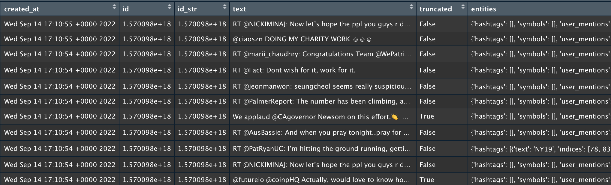
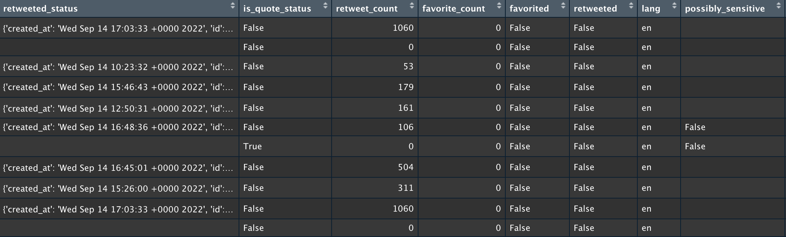

Data Gathering
In this part, we focus on figuring out which data we need, and after analyzing what the data we need, we need to find out where we can find the data. After we collect the data, we should figure out which variables in the data need our attention, including the summary of the overall data.
In this part, we think about the above problems according to each question we mentioned in introduction.
As we said in the introduction, the first problem we want to solve is the relationship between variables, the time of being on the job, the department of work, the type of work, and hourly pay. Therefore, we need to collect a panel data of people with random sampling, and take each person as a data point. Each row includes a person's work department and working years and so on. Generally speaking, the longer the working years, the more experience, and the higher the salary should be. This is our intuition and the type of work, such as part-time or full-time, the hourly wage of a full-time job is usually higher than that of a part-time job, because the full-time job is more stable. However, there are some cases where the part-time job is higher than the full-time job, which is usually related to other factors of the job position. For example, the salary of some programmers is higher than that of library assistants. Here, a panel data up to June 2021 is found on the data.world.
The snapshot is as follows. As we can see, the collected data are from people from all walks of life. This includes their nature of work, work department, and daily salary, which are very consistent with the information we need. The data are also from recent years, which can help us analyze our first question.
The second question is that we want to explore the relationship between the variables mentioned in the first question and regular pays. We want to explore this problem, because when the regular pay is not high, it is also likely that the hourly wage is high, but because it is difficult for us to collect the wage hours of each person's specific work, this problem is also valuable. There is a certain difference between hourly wage and daily wage. For the data set of this problem, we use the same data set as that of the first problem. Because we can see the daily wage variables from the snapshot, we can use this data for analysis.
The third and fourth questions are about job descriptions. We hope to obtain useful information through job descriptions. Then, we need to collect a lot of data related to recruitment information. We should find a job description and obtain information related to recruitment itself, including salary and position level. Because these two problems focus on the text information of job descriptions, we need to capture the text information of job descriptions on recruitment websites. For this data set, we also get from data.world. It is about the data scientists job description in the US in 2019. And the snapshot follows.


The next six questions are all about Twitter. We want to know what tweets people will like about work and what tweets people will forward about work, so we need to crawl data from Twitter with relevant keywords as work or career. The snapshot follows.
 Favorite and Retweet are two functions of Twitter. Our original idea was to study the number of favorite and retweet, but when we browsed the collected data, we found a phenomenon, that is, generally speaking, the number of favorite and retweet of a tweet is very small, and the number of tweets that are extremely popular is very small, showing extreme right skewness, So we choose not to use the number of favorites and retweets for research, but only to analyze whether there are favorite or retweet. More specifically, when the likes are greater than one or the forwards are greater than one, we all think that this tweet is concerned by people and people have the same or similar views, and agree with the views in the tweet, so as to solve the fifth and sixth problems.
Secondly, we want to study what people's emotional attitude towards job related tweets is and what people's emotional attitude towards job related tweets is. Therefore, we also need to crawl tweet data with the relevant keywords of job or work and job hunting. Finally, we hope that for specific people, new graduates and retirees, their emotional attitude towards work is based on the fact that new graduates and retirees are generated around work and if they are divorced from work, these two words are used very infrequently in daily life. Therefore, we need to crawl the relevant keywords from Twitter: new graduate and retire. These data are collected using the Twitter API.
Among these variables, we will focus on the research of text information for emotional analysis, including the number of likes and forwarding. Since the composition and structure of Twitter data collected according to different keywords are the same, we only show snapshots of tweets with the keywords of jobs and work.
Twitter itself has a special data interface that we can get from. If you want to get the permission of the Twitter data interface, you need to apply to Twitter for permission. Since my authority is the most common, I can only collect data for the last seven days. However, more advanced permissions are expensive, and this problem only requires the data of the last seven days. Because we only want to use panel data, it is enough. Due to the limited data available through keyword search in the past seven days, we collected 6000 or 10000 pieces of data for each question. The data collection code can also be found in this link, which can be provided for your reference.
All the above data can be obtained through this link.